一、程序的简介
-
5G-KPI统计程序的背景：
随着4G通信的发展，需要测量的参数大幅度的增多，统计维度需求也越来越多，指标需求更是成倍的增长。 旧版的KPI统计程序代码量不断增多，嵌套层次也不断加深, 且每次添加指标必须要修改代码才可以。大大降低了代码的效率和可维护性。
为了改善程序的可维护性和效率，5G-KPI统计程序应运而生。
5G-KPI统计程序可以实现文件纬度、栅格纬度、小区纬度、小区栅格纬度四个纬度的指标统计， 还可针对主服、领区、应用层、调度层、语音质量等纵向统计分析，实现指标的全面供给和专项统计。
-
图标和名称
DtDrvKPIStat.exe
-
角色与位置
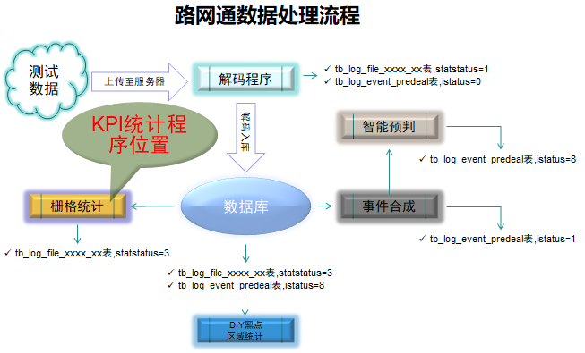
二、程序亮点
-
5G-KPI统计程序的亮点：实现了指标的可配置性
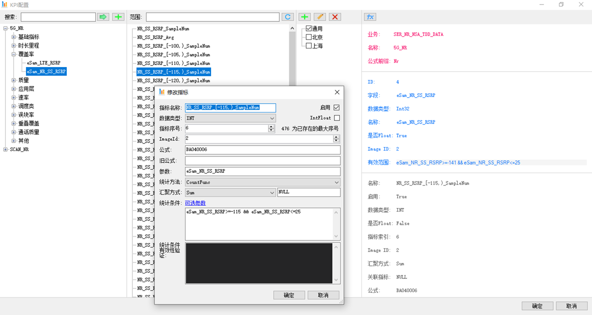 最大的亮点：当然是实现了指标的可配置性，添加指标不用再进行繁琐的代码修改，编译等工作， 全部界面化进行配置即可，大大提高了软件的维护效率。且单个指标可以根据地市需求进行指定，这样，每个地市统计的指标都是地市需求的指标， 大大减少了程序的无用功，提高了运行效率。保障了地市人员的维护工作。
-
5G-KPI统计程序的亮点：公式自动生成
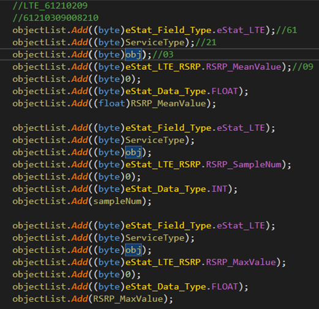
 公式自动生成：传统的统计程序维护，每当新增一个指标，指标类型，指标种类，
等都需要新增代码，并且指标公式每一个都需要7行代码来组合生成，有的更多行才行，并且需要关注每个组合节点是否正确，
给开发工作带了极大的挑战，占用了大量的时间。但是，新版的统计程序释放的程序员在这个过程的劳动力，
让更多的精力集中在了代码的优化上。
公式自动生成：传统的统计程序维护，每当新增一个指标，指标类型，指标种类，
等都需要新增代码，并且指标公式每一个都需要7行代码来组合生成，有的更多行才行，并且需要关注每个组合节点是否正确，
给开发工作带了极大的挑战，占用了大量的时间。但是，新版的统计程序释放的程序员在这个过程的劳动力，
让更多的精力集中在了代码的优化上。
-
5G-KPI统计程序的亮点：配置文件一键生成
KPI配置文件一键生成：KPI配置文件一键生成：传统的统计程序维护， 所有的数据格式配置和指标解析格式配置都写在文件TableColumnDefine.xlsx中，每每有新增内容时， 需要一行一行的编辑EXCEL，工作量非常大。初次之外客户端的配置也需要手动修改相应的.xml文件。新版的统计程序， 通过程序一键生成配置文件，直接拿来就能用，有效的解放了程序员的劳动力，让维护人员有更多的时间来关注软件的质量问题。
-
5G-KPI统计程序的亮点：一键发布程序
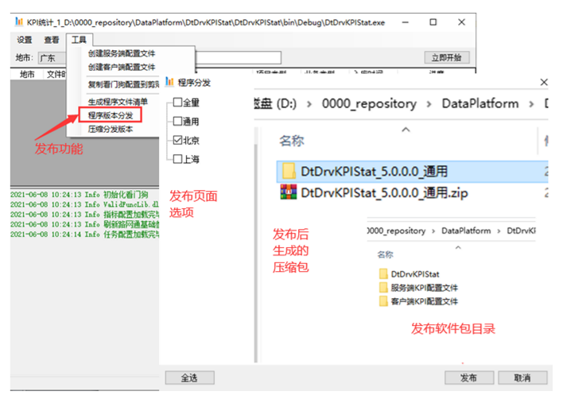 一键发布程序：一键发布程序：传统的统计程序维护发布，需要程序员打包发布， 发布的内容全靠程序员自己记忆决定，时长会有少发布或者发布错误的情况。新版程序加入一键发布功能，程序自动更具地市、 指标配置等直接将正确的发布文件打包好，直接发给地市更新即可。减少了很多琐碎的工作。保证了发布软件的正确性。
-
5G-KPI统计程序的亮点：程序配置的可视化
程序配置的可视化：软件配置的可视化，不仅可以提高程序的可维护性，更人性化， 而且可以避免很多错误，缓解文字符号对维护人员的情绪控制。配置界面更有利于发现问题，打开页面一目了然，错配和少配快速发现。 建议后续的界面开发配置都可做成界面可视化。
三、工作原理
-
原理：把采样点分类，然后进行：加法、除法、比较运算(求和、求均值、最大最小值)
-
原理拓扑图
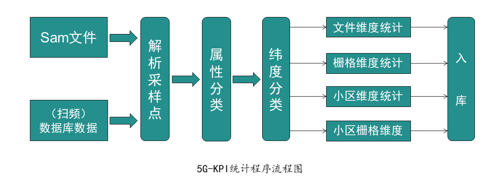-
从统计的层面看，统计程序难点不在运算，而在分类。KPI统计程序最重要的工作就是如何把采样点精准的分类。只要分类好，再进行运算是很容易的事。
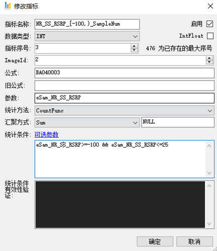 简单分类：比如要求SS_RSRP >= -100的采样点的数量，只需将SS_RSRP的范围设置为[-100, 0)就可以了， 接着，当单个的采样点经过时，在范围内则加1，不在则跳过即可。
择统计方法为计数：CountFunc，汇聚方式为求和：Sum。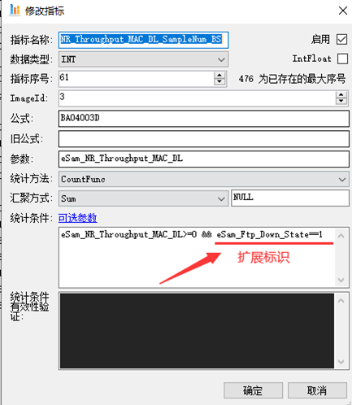 复杂分类：在并发上传下载测试中，上传和下载采样点是穿插在一起的。 而解码只根据上传下载开始和结束标识来进行区分，这样就把过程采样点的状态搞错了。如果直接用这个转台统计是不对的。 栅格采用重定位动态扩展属性标识法，对每个采样点进行追踪，准确归类。当采样点经过时，直接判定扩展标识即可。
-
从理解代码的层面看，统计程序难点不在分类，而在运算。栅格程序代码分类的部分占整体代码量是很少的。 大量的代码实现都是为了运算存在的。而这部分代码对于维护人员来说，理解起来难度也是最大的。
统计运算部分：首先将处理好的采样点分别划分到四个维度列表中， 然后每个维度启动一个线程，多线程开始统计。每个线程负责各自的计算和入库处理。在统计过程中，根据指标树中的参数进行指标统计， 指标树中没有的参数直接跳过，不做处理。这样使程序做的都是有用功。
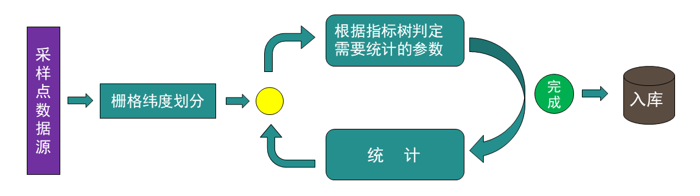
-
四、使用说明
-
程序性界面认识：
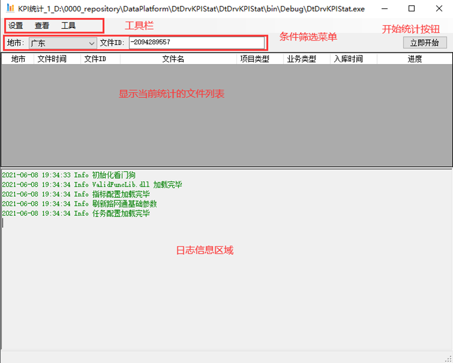 工具栏：有设置、查看、工具三个功能按钮。设置中有基本设置、任务设置、重启和退出功能。 查看中有指标配置、指标分发、程序目录、文件目录、软件版本功能。工具中有创建配置信息、程序分发、复制看门狗信息等功能。
条件栏：指定地市和文件进行统计。
文件列表：显示本次将要统计的文件信息。
日志区域：显示日志。
立即开始按钮：点击后程序会立即运行，开始统计 -
设置->基本设置：
 立即开始按钮：点击后程序会立即运行，开始统计
立即开始按钮：点击后程序会立即运行，开始统计
程序ID：程序ID标识，大于0的数字。
Sam路径：指定读取sam文件的路径。服务器：数据库IP地市或地址别名。
数据库：连接的数据库名。
用户名：数据库登陆用户名。
密 码：数据库登陆密码。
压缩统计结果：选择后入库的image数据会进行压缩入库。
设计好后点击确定，设置的内容就会写入配置文件，程序会重启加载配置文件。 -
设置->任务设置->文件筛选
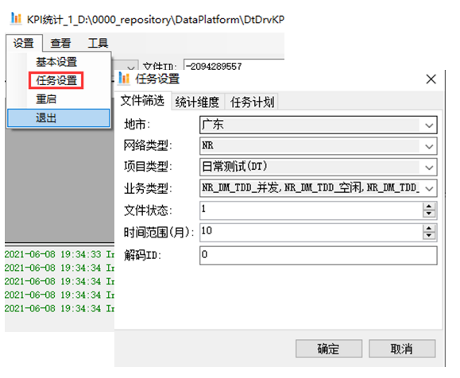 地市：指定需要进行统计的地市。
网络类型：指定网络制式。
项目类型：指定统计的项目类型。
业务类型：指定统计的业务类型。
文件状态：指定什么状态下的文件参与统计。
时间范围：指定要统计的时间范围。
解码ID：指定统计那个解码程序解码的文件。
设计好后点击确定，设置的内容就会写入配置文件，程序会重启加载配置文件。 -
设置->任务设置->统计维度
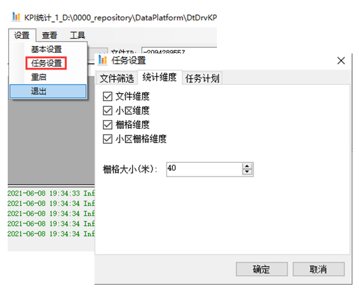 统计维度页： 用来选择，统计的纬度，目前统计维度有四种：文件维度、小区维度、栅格维度、小区栅格维度。前面打勾则表示会进行相应维度的统计。
统计维度页： 栅格大小：设置栅格的大小，40米，代表栅格为一个40米长40米宽的正方形大小。
统计维度页：设计好后点击确定，设置的内容就会写入配置文件，程序会重启加载配置文件。 -
设置->任务设置->任务计划
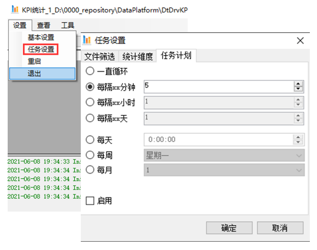 任务计划页： 用来设定程序的自动执行周期，分为一直循环、每隔xx分钟、每隔xx小时、每隔xx天、每天指定时间点、每周指定日期、每月指定日期7个等级。
启用： 设置好循环执行周期后，勾选启用，设置项才会生效，反之不生效。
设计好后点击确定，设置的内容就会写入配置文件，程序会重启加载配置文件。 -
其它功能项比较抽象，请培训讲师现场操作演示！